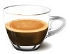

Cafe Americano
- El café americano, refiriéndose al café típico que se bebe en los Estados Unidos, es la mezcla de agua caliente y café procesado en una cafetera con filtro de café.

Cafe Doble
- El espresso doble, también comúnmente llamado café doble, se hace preparando dos cafés espresso en la taza de cappuccino. No confundir con el espresso largo.

Cafe
- El café es la bebida que se obtiene a partir de los granos tostados y molidos de los frutos de la planta del café; es altamente estimulante por su contenido de cafeína.

Cafe Manchado
- El café manchado o macchiato en italiano, también llamado espresso macchiato, es un café cortado de Italia, es un expreso con una pequeña cantidad de leche caliente y espumada.
Cafe Doble
- El espresso doble, también comúnmente llamado café doble, se hace preparando dos cafés espresso en la taza de cappuccino. No confundir con el espresso largo.
Cafe
- El café es la bebida que se obtiene a partir de los granos tostados y molidos de los frutos de la planta del café; es altamente estimulante por su contenido de cafeína.
Cafe Manchado
- El café manchado o macchiato en italiano, también llamado espresso macchiato, es un café cortado de Italia, es un expreso con una pequeña cantidad de leche caliente y espumada.

Cafe Lungo
- Lungo es una bebida de café hecha usando una máquina de espresso para hacer un café al estilo italiano: negro corto con más agua, lo que da como resultado un café más grande.

Cafe Con Leche
- El café con leche es una de las bebidas más comunes que incluyen café. Consta básicamente de dos ingredientes: café y leche, pero ronda la mezcla por partes iguales.
Cafe Con Leche
- El café con leche es una de las bebidas más comunes que incluyen café. Consta básicamente de dos ingredientes: café y leche, pero ronda la mezcla por partes iguales.